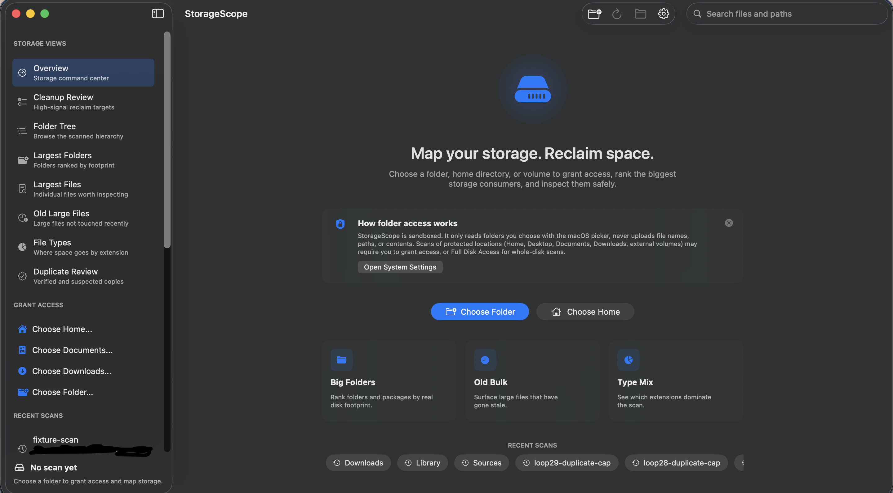

StorageScope
An open-source Mac storage cleaner and disk space analyzer for finding large folders, stale files, duplicate candidates, and cleanup targets without uploading your scan data.

Mac storage management
Rank largest folders, old large files, file types, installers, archives, disk images, caches, and build artifacts.
Local-first cleanup planning
Inspect cleanup candidates locally, confirm actions, and move files to Trash through macOS APIs.
Duplicate file review
Start from same-size duplicate candidates, verify matches with SHA-256, and keep hashing work bounded.